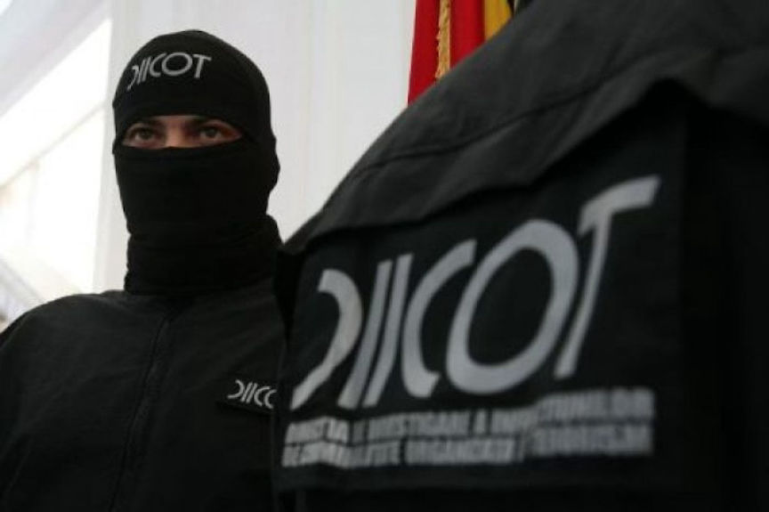
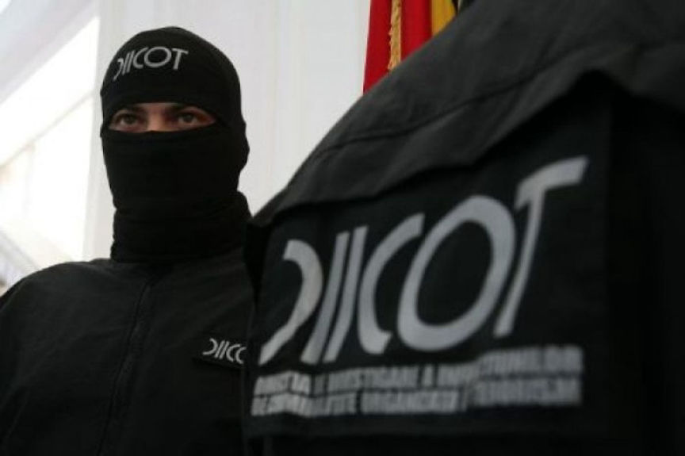

Romanian Man Sentenced to Prison for Buying Drugs on the Darkweb
The Judges of the Craiova Court of Appeal court sentenced a man to more than eight years in prison for ordering drugs on the darkweb. The court also imprisoned a friend of the defendant who collected drug packages on his behalf. The sentence resulted from the prosecution’s and the defendant’s appeal to a 6-year sentence handed in late 2018.
According to Prosecutors of the Directorate for Investigating Organized Crime and Terrorism (DIICOT) Investigations against the dark web drug trafficking of 41-year-old Sain Gabriel began in the summer of 2017. The investigations were triggered by a tip from German authorities who intercepted a drug package on its way to Craiova, Romania. The package was intercepted in the Frankfurt Airport mail sorting Center and reportedly contained 125 grams of amphetamine.
When trying to identify the owner of the drugs, DIICOT investigators found out that the recipient’s address on the package was fake. The investigators later questioned a postal officer who had been delivering packages sent to that address. The officer revealed that a woman had requested him to call her whenever a new package arrived and to deliver the packages to her personally. This revelation resulted in the arrest of 24-year-old Stan Andreea Roxana.
On being questioned, Roxana told the investigators that she received the packages on behalf of her friend Gabriel. She told the investigators that Gabriel had asked her to contact the postal officer and tell him that she wanted to collect a relative’s package. Roxana reportedly claimed to be unaware of the package’s contents.
DIICOT prosecutors claimed that on June 27, 2017, Roxana had admitted to knowing that Gabriel had been ordering drugs on the darkweb. The prosecutors also claimed Roxana had testified that Gabriel had been selling cocaine for several years. Roxana, however, told the court in a sworn testimony that she did not know what Gabriel’s packages contained.
In Gabriel’s case, the prosecution told the court that it had established that he had purchased drugs on the dark web using bitcoin and had them delivered to Romania by mail. Gabriel allegedly imported 125.5 grams of amphetamine from Germany, 23 grams of cocaine from Belgium, 1.45 grams of cannabis from the Netherlands. The court was also told that Gabriel had ordered 73 grams of amphetamine that were not delivered.
During the sentencing in December 2018, Judges of the Dolj Court said that based on facts presented to them, they established that Gabriel solely ordered the drugs and sentenced him to 6 years in prison. They then said that Roxana might have never known what the packages contained and acquitted her.
Unhappy with the judgment, Gabriel took the case to the Craiova Court of Appeal. On October 8, the Ministry of Justice announced that the court of appeal judges had issued the final sentences. According to the announcement, Gabriel was sentenced to 8 years and eight months while Roxana was sentenced to 5 years and ten months in prison.
According to Prosecutors of the Directorate for Investigating Organized Crime and Terrorism (DIICOT) Investigations against the dark web drug trafficking of 41-year-old Sain Gabriel began in the summer of 2017. The investigations were triggered by a tip from German authorities who intercepted a drug package on its way to Craiova, Romania. The package was intercepted in the Frankfurt Airport mail sorting Center and reportedly contained 125 grams of amphetamine.
When trying to identify the owner of the drugs, DIICOT investigators found out that the recipient’s address on the package was fake. The investigators later questioned a postal officer who had been delivering packages sent to that address. The officer revealed that a woman had requested him to call her whenever a new package arrived and to deliver the packages to her personally. This revelation resulted in the arrest of 24-year-old Stan Andreea Roxana.
DIICOT | Source: romaniajournal.ro
On being questioned, Roxana told the investigators that she received the packages on behalf of her friend Gabriel. She told the investigators that Gabriel had asked her to contact the postal officer and tell him that she wanted to collect a relative’s package. Roxana reportedly claimed to be unaware of the package’s contents.
DIICOT prosecutors claimed that on June 27, 2017, Roxana had admitted to knowing that Gabriel had been ordering drugs on the darkweb. The prosecutors also claimed Roxana had testified that Gabriel had been selling cocaine for several years. Roxana, however, told the court in a sworn testimony that she did not know what Gabriel’s packages contained.
In Gabriel’s case, the prosecution told the court that it had established that he had purchased drugs on the dark web using bitcoin and had them delivered to Romania by mail. Gabriel allegedly imported 125.5 grams of amphetamine from Germany, 23 grams of cocaine from Belgium, 1.45 grams of cannabis from the Netherlands. The court was also told that Gabriel had ordered 73 grams of amphetamine that were not delivered.
During the sentencing in December 2018, Judges of the Dolj Court said that based on facts presented to them, they established that Gabriel solely ordered the drugs and sentenced him to 6 years in prison. They then said that Roxana might have never known what the packages contained and acquitted her.
Unhappy with the judgment, Gabriel took the case to the Craiova Court of Appeal. On October 8, the Ministry of Justice announced that the court of appeal judges had issued the final sentences. According to the announcement, Gabriel was sentenced to 8 years and eight months while Roxana was sentenced to 5 years and ten months in prison.